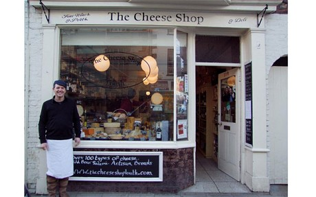
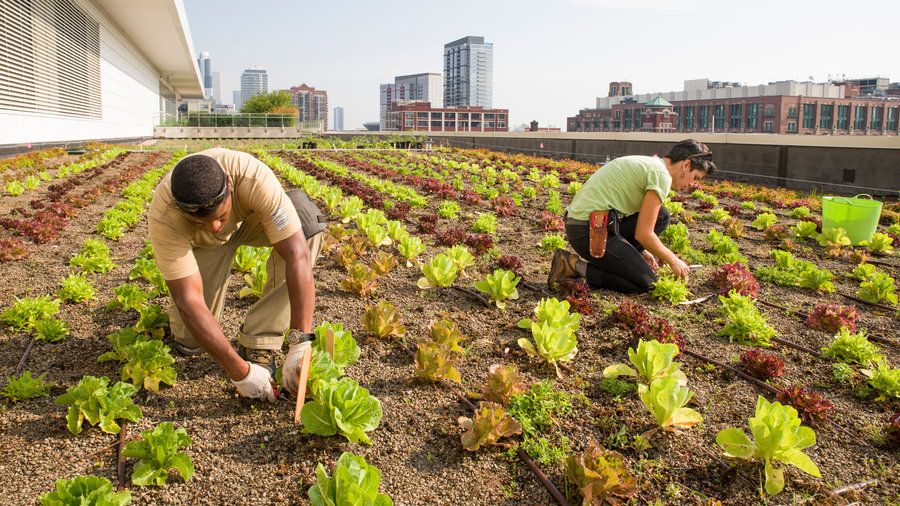
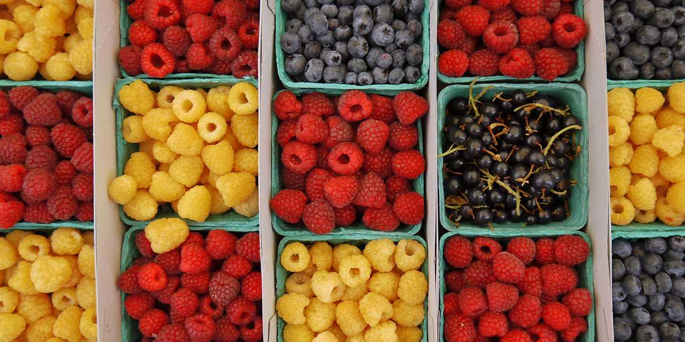
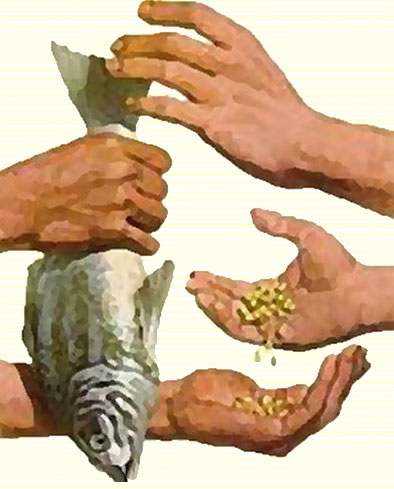

There are many great places to find ingredients for your recipes!
Used to buying at your typical chain supermarket??
Have you tried to expand your food network?
Tired of eating food and feeling bad?
Below are some GREAT alternatives to shopping at a big corporation:
-
 Visit small local shops run by community members -
 Grow some veggies in your back yard! -
 Walk to the local farmers' markets -
 Barter some food with your neighbors